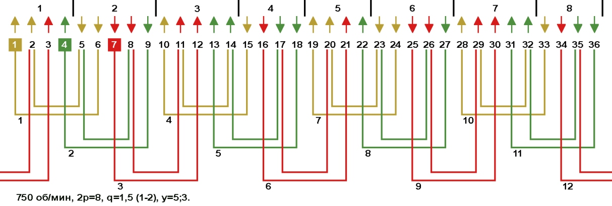
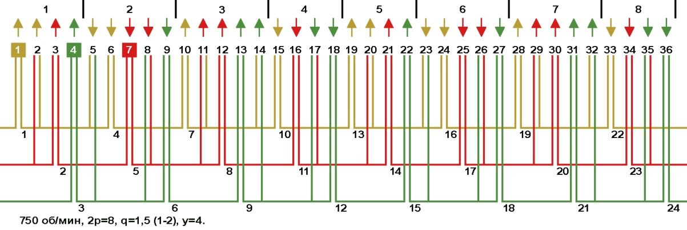
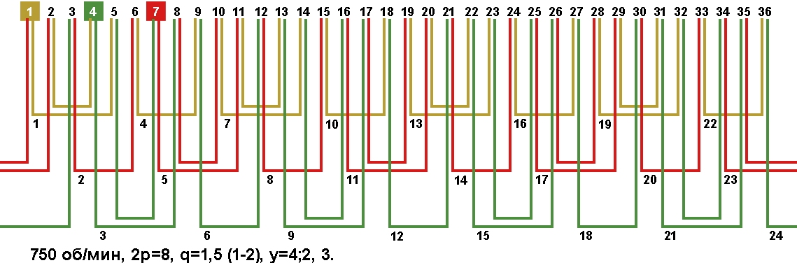

Перейти на главную страницу справочника.
Обмотки с несплошной фазной зоной с дробным числом пазов на полюс и фазу в электродвигателях 750 об/мин, Z1=36.
Число пазов на полюс и фазу q=1,5 при Z1=36 и 2p=8. Сплошная фазная зона занимает 1,5 паза в полюсе (q=1,5).
- Так как недостатком обмоток со сплошной фазной зоной являются большие потери в стали сердечника, вызванные несинусоидальностью МДС в воздушном зазоре, то для приближения кривой магнитного потока к синусоиде применяют обмотки с расширенной фазной зоной и двухслойные обмотки с укороченным шагом. Все эти обмотки расширяют фазную зону, поэтому стороны катушек одной фазы перемещаются в фазную зону соседней фазы.
Обмотки, в которых некоторые стороны катушек размещаются на фазных зонах соседних фаз, называются обмотками с несплошной фазной зоной.
Обмотки с дробным числом пазов на полюс и фазу с несплошной фазной зоной.
- На Рис. 1 схема укладки концентрической обмотки с расширенной фазной зоной. Средний шаг по пазам укороченный (рекомендуемый). Для определения числа пазов несплошной фазной зоны для однослойных обмоток с дробным числом пазов на полюс и фазу, нужно число пазов занимаемых одной фазой разделить на 2 и полученное число разделить на число катушек (катушечных групп) в фазе. В данном примере фаза занимает 16 пазов, катушек (катушечных групп) в фазе 4, то несплошная фазная зона занимает 16/2/4=2 паза. Расширение фазной зоны в данной обмотке увеличено на 2-1,5=0,5 паза.
Рис. 1 
{kind=link}
- На Рис. 2 схема укладки двухслойной обмотки. Средний шаг по пазам укороченный (рекомендуемый). Для определения числа пазов несплошной фазной зоны в двухслойных и одно-двухслойных обмотках с дробным числом пазов на полюс и фазу, нужно число пазов занимаемых одной фазой разделить на число катушек (катушечных групп) в фазе. В данном примере фаза занимает 16 пазов, катушек (катушечных групп) в фазе 8, то несплошная фазная зона занимает 16/8=2 паза. Расширение фазной зоны в данной обмотке увеличено на 2-1,5=0,5 паза.
Рис. 2 
{kind=link}
- На Рис. 3 схема укладки двухслойной обмотки. Средний шаг по пазам укороченный. Для определения числа пазов несплошной фазной зоны в двухслойных и одно-двухслойных обмотках с дробным числом пазов на полюс и фазу, нужно число пазов занимаемых одной фазой разделить на число катушек (катушечных групп) в фазе. В данном примере фаза занимает 24 паза, катушек (катушечных групп) в фазе 8, то несплошная фазная зона занимает 24/8=3 паза. Расширение фазной зоны в данной обмотке увеличено на 3-1,5=1,5 паза.
Рис. 3 
{kind=link}
- Какая обмотка из рассмотренных выше имеет лучшие характеристики, с расширением фазной зоны на 0,5 или 1,5 паза?
Чем больше число пазов расширяющих фазную зону, тем ближе кривая магнитного потока к синусоиде, но чрезмерное увеличение числа пазов расширяющих фазную зону ведёт к ухудшению КПД, поэтому придерживаемся рекомендаций производителей электродвигателей.
Лучшим выбором из выше показанных схем будет двухслойная обмотка с равносекционными катушками на Рис. 2 с расширением фазных зон на 0,5 паза.
Для нахождения числа пазов расширяющих фазную зону рекомендованных производителем, нужно число пазов на полюс и фазу разделить на 2:
28.03.2019 г.